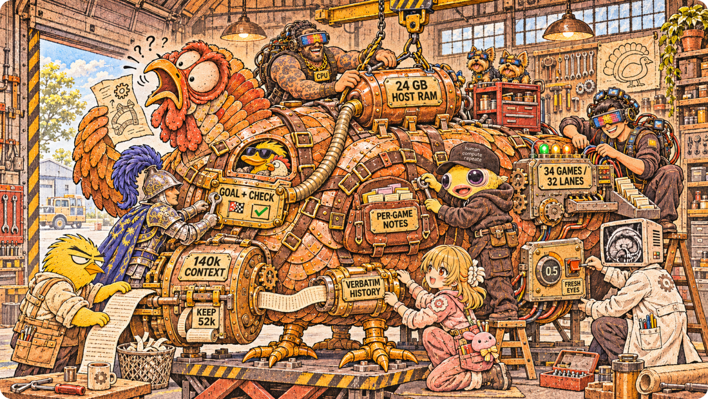
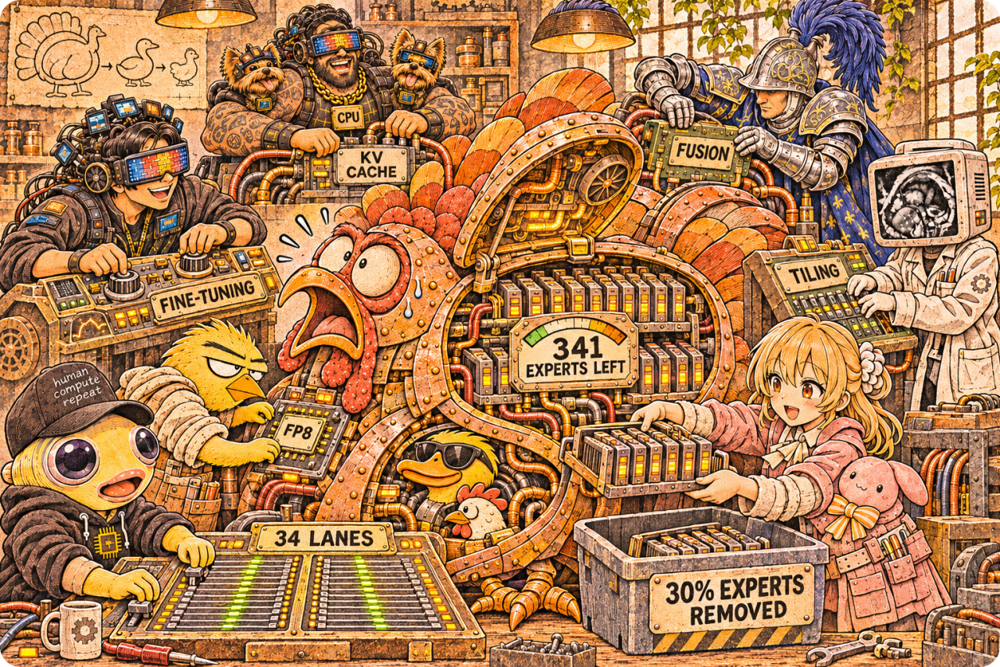
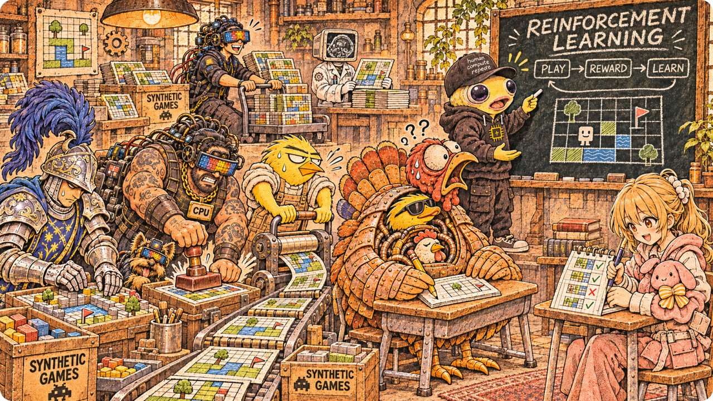

ARC-AGI-3 · Review draft · November 6, 2026
Making a game-playing model use its time well
Our approach combined three lines of work: a tool-using game harness, a faster inference stack, and experiments in reinforcement learning. The practical lesson was that these are not independent. A model that takes longer to generate each attempt explores less; a harness that repeatedly discards its cached context spends its budget rereading; and a training recipe that differs from the served model can optimize the wrong behavior.
This write-up covers the October 18 submission harness and the subsequent reinforcement-learning experiments.
1. Harness: observe, test, act, and remember

We built on Daniel Franzen's notebook and agent framework. The model observes the game frame and writes Python against a sandbox to inspect it and take actions. The important unit is not a single button press but an experiment: identify an uncertainty, choose an action that distinguishes plausible explanations, and update the working model from the resulting frame.
Two failure modes motivated the harness changes. First, the agent could do substantial analysis without moving. Second, it could move repeatedly while pursuing the wrong idea of the goal. We therefore emphasized identifying the goal, probing uncertain mechanics with small experiments, and batching actions only after their effects were understood. On a new level, the agent should preserve useful knowledge of the game's rules without assuming that the previous level's local plan still applies.
Context length and request limits
In the documented temperature-0.5 configuration, the context window was 143,360 tokens, with a 12,288-token maximum output per ordinary model request. The harness reserved that output allowance and a further 512 tokens when estimating the input budget. This gives a nominal input budget of 130,560 tokens; it is not a promise that the server will accept exactly that many tokens, because the harness uses an estimate of the rendered request.
When that budget was exceeded, we made a substantial cut, targeting approximately 58,000 retained tokens, rather than deleting just enough history to fit the next request. Whole message blocks and the latest interaction impose granularity on the actual retained length. The distinction matters: the window is not the same as the input allowance, and the retained-history target is not the maximum response length.
Keeping the cache useful
The key-value cache stores intermediate model computation for a prefix that has already been processed. Our goal was to make successive requests extend that prefix, rather than rewrite it.
We retained the model's generated history as faithfully as possible. Small changes to old reasoning, formatting, or chat-template rendering can turn an apparently similar conversation into a different token sequence. Preserving history verbatim avoids unnecessary work caused by our own transformations.
We also used a large gap between the trim threshold and the retained-history target. If the harness trims a little on every turn, the prefix changes on every turn. Cutting down once leaves room for multiple append-only turns before another cut is needed. A cut still invalidates the affected prefix; this strategy reduces the frequency of that event rather than making it free.
Finally, serving and scheduling were cache-aware. The configuration combined 32 concurrent request lanes, 180 Mamba state slots, and a 24 GB host-memory cache tier. Because the model has recurrent state as well as attention state, preserving only attention keys and values is not enough. The server must also manage the recurrent state needed to resume a cached path.
None of this guarantees that a prefix stays resident. Eviction, contention, history trimming, and deliberate restarts can still cause recomputation. The objective was stable, reusable prefixes under the actual workload—not an assertion of permanent cache residency.
Per-game memory
We separated conversational history from explicit game notes. The selected memory mode used a persistent Markdown-style notes object owned by the harness, rather than relying on ordinary variables or files inside each temporary Python sandbox. Writes were streamed back to the harness so that already-recorded notes could survive a tool timeout. Retained helper functions also reduced the need to rebuild useful code on every call.
The notes store was bounded at 40,000 characters. The selected head-and-tail presentation kept the beginning and end visible when the displayed notes were shortened, rather than assuming the beginning alone contained the useful information. Notes could be shown again after a context cut or level transition. This gave the agent a place to retain discovered rules, unsuccessful approaches, and the current plan even when the full conversation no longer fit.
We also used a “fresh eyes” mechanism for prolonged stalls: write a handover note, clear the conversation, and ask the model to reconsider competing explanations. That intentionally sacrifices the old conversation's cache reuse. It is a recovery mechanism for an unproductive trajectory, not a cache optimization.
2. Inference: more useful attempts within the same budget

The serving stack used a quantized Flash-Next model on a single 96 GB RTX PRO 6000, with Daniel's SGLang fork and additional serving patches. The routed experts used four-bit weights. We restricted routing to 341 of the original 512 experts per layer, freeing memory for the rest of the workload. This is a capacity–throughput trade-off, not a claim that removing experts improves reasoning.
We used a separately trained multi-token-prediction drafter for speculative decoding. The drafter proposes tokens; the target model verifies them. The practical metric is accepted progress per verification step, not the drafter's standalone quality. A change to the target weights can change acceptance, so a drafter trained against the old target should not be assumed to retain its speed advantage.
Memory layout, quantized cache formats, fused operations, and kernel tiling were part of the same optimization problem. The documented build used a four-bit attention-cache configuration, alongside other precision choices for different model components.
The reason to optimize this stack was straightforward: under a fixed wall-clock allowance, avoiding repeated prefill and generating tokens faster creates room for more experiments. It does not prove that the model's next experiment is better. We kept serving speed, internal game scores, and Kaggle leaderboard scores separate when evaluating changes.
3. Reinforcement learning: learn from play, test beyond the training trajectory

Our training work used saved game states and model trajectories. A saved moment lets us replay the same starting situation, branch into multiple attempts, and compare what happens next without paying to rediscover the entire prefix of the game. Earlier experiments included supervised learning on efficient wins, expert iteration over alternative continuations, and a lightweight per-turn coach. Later work moved toward on-policy ReST-GRPO-style training: collect attempts from the current model, score them, update the model, and collect again.
The game pipeline included procedural level generation. A generated level preserved a game's mechanics while changing the instance, and came with a solution that could be replayed through the actual engine. This provided fresh training situations and action baselines, rather than depending only on a fixed collection of hand-authored boards.
Training fidelity was a central constraint. The trainer needed the same expert-routing masks as the server. Long trajectories required memory-efficient attention and packed expert weights. We also had to distinguish improving the playing policy from improving the speculative drafter: better drafting makes inference faster without necessarily making decisions better.
The results were not uniformly positive. The October 18 review recorded several earlier weight-training attempts that tied or lost against the base model. The subsequent RL v4 record reported improvements on its internal evaluation suites. Those are different experiments and different measurement settings; neither should be presented as a controlled estimate of the final Kaggle contribution. The defensible conclusion is that reinforcement learning was an active experimental track, while harness behavior and serving efficiency were already integral to the documented submission stack.
4. What we would emphasize
The most useful engineering distinction was between what the agent knows, what it is currently doing, and what the server has cached. Notes preserve selected knowledge; recent history preserves the trajectory; the cache saves computation for an exact rendered prefix. Treating them as one kind of “memory” obscures both reasoning failures and performance failures.
Our approach was to preserve useful history until a deliberate cut, give the agent explicit persistent notes, intervene when it remained stuck, and make the serving stack fast enough to support more attempts. Training then had to be judged in that same environment, not against an easier approximation of it.